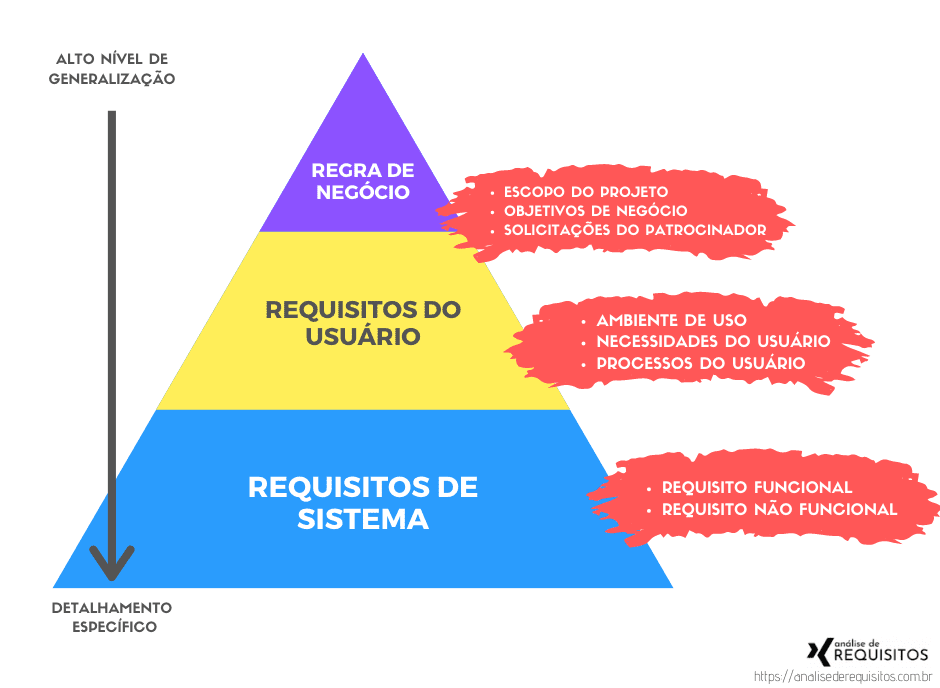

Analise de Requisitos
Diagrama de Casos de Uso (Use Case Diagram):
O diagrama de casos de uso é uma ferramenta importante para entender os requisitos do sistema a partir da perspectiva dos usuários finais. Ele mostra as interações entre os atores (usuários) e os casos de uso (funcionalidades do sistema). Cada caso de uso descreve um cenário específico em que um ator interage com o sistema.
Diagrama de Classes (Class Diagram):
O diagrama de classes é usado para representar a estrutura estática do sistema, mostrando as classes do sistema, seus atributos, métodos e os relacionamentos entre elas. Durante a análise de requisitos, você pode identificar as principais entidades do sistema e como elas se relacionam entre si.
Diagrama de Sequência (Sequence Diagram) e Diagrama de Atividades (Activity Diagram):
Os diagramas de sequência e atividades são úteis para modelar o comportamento dinâmico do sistema. O diagrama de sequência mostra a interação entre objetos ao longo do tempo, enquanto o diagrama de atividades mostra o fluxo de atividades dentro do sistema. Ambos os diagramas podem ser usados para entender os requisitos de processo e a lógica de negócios.
